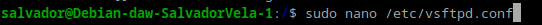
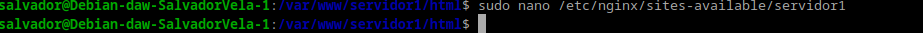

Práctica 2.1 – Instalación y configuración de servidor web Nginx
Instalación servidor web Nginx
Para instalar el servidor Nginx en nuestra Debian, primero actualizamos los repositorios y después instalamos el paquete correspondiente:
Comprobamos que Nginx se ha instalado y que está funcionando correctamente:
Creación de la carpeta del sitio web
Una vez hecho esto vamos a crear la carpeta de nuestro sitio web o dominio:

Dentro de esa carpeta html, debéis clonar el siguiente repositorio:
https://github.com/cloudacademy/static-website-example
Además, haremos que el propietario de esta carpeta y todo lo que haya dentro sea el usuario www-data, típicamente el usuario del servicio web.
Y le daremos los permisos adecuados para que no nos dé un error de acceso no autorizado al entrar en el sitio web:

Para comprobar que el servidor está funcionando y sirviendo páginas correctamente, podéis acceder desde vuestro cliente a:
http://IP-maq-virtual

En Nginx hay dos rutas importantes. La primera de ellas es sites-available, que contiene los archivos de configuración de los hosts virtuales o bloques disponibles en el servidor. Es decir, cada uno de los sitios webs que alberga el servidor. La otra es sites-enabled, que contiene los archivos de configuración de los sitios habilitados, es decir, los que funcionan en ese momento.
Dentro de sites-available hay un archivo de configuración por defecto (default), que es la página que se muestra si accedemos al servidor sin indicar ningún sitio web o cuando el sitio web no es encontrado en el servidor (debido a una mala configuración, por ejemplo). Esta es la página que nos ha aparecido en el apartado anterior.
Para que Nginx presente el contenido de nuestra web, es necesario crear un bloque de servidor con las directivas correctas. En vez de modificar el archivo de configuración predeterminado directamente, crearemos uno nuevo en /etc/nginx/sites-available/nombre_web:
Y el contenido de este nuevo archivo es:
Aquí la directiva root debe ir seguida de la ruta absoluta donde se encuentre el archivo index.html de nuestra página web, que se encuentra entre todos los que habéis descomprimido.
Y crearemos un archivo simbólico entre este archivo y el de sitios que están habilitados, para que se dé de alta automáticamente.
Y reiniciamos el servidor para aplicar la configuración:

Comprobaciones
Comprobación del correcto funcionamiento
Como aún no poseemos un servidor DNS que traduzca los nombres a IPs, debemos hacerlo de forma manual. Vamos a editar el archivo /etc/hosts de nuestra máquina anfitriona para que asocie la IP de la máquina virtual a nuestro server_name.
Este archivo, en Linux, está en: /etc/hosts
Y en Windows: C:\Windows\System32\drivers\etc\hosts
En mi caso usare windows

Y deberemos añadirle la línea:
192.168.X.X nombre_web
Donde debéis sustituir la IP por la que tenga vuestra máquina virtual.
Comprobar registros del servidor
Comprobad que las peticiones se están registrando correctamente en los archivos de logs, tanto las correctas como las erróneas:
/var/log/nginx/access.log: cada solicitud a su servidor web se registra en este archivo de registro, a menos que Nginx esté configurado para hacer algo diferente./var/log/nginx/error.log: cualquier error de Nginx se asentará en este registro.
Aqui se muestra el contenido que contine mi /var/log/nginx/access.log
Si queremos tener varios dominios o sitios web en el mismo servidor Nginx (es decir, que tendrán la misma IP), debemos repetir todo el proceso anterior con el nuevo nombre de dominio que queramos configurar.
Configurar servidor SFTP en Debian
En primer lugar, lo instalaremos desde los repositorios:
sudo apt-get update
sudo apt-get install vsftpd
Ahora vamos a crear una carpeta en nuestro home en Debian:
mkdir /home/nombre_usuario/ftp

En la configuración de vsftpd indicaremos que este será el directorio al cual vsftpd se cambia después de conectarse el usuario.
Ahora vamos a crear los certificados de seguridad necesarios para aportar la capa de cifrado a nuestra conexión (algo parecido a HTTPS):
sudo openssl req -x509 -nodes -days 365 -newkey rsa:2048 -keyout /etc/ssl/private/vsftpd.pem -out /etc/ssl/private/vsftpd.pem

Y una vez realizados estos pasos, procedemos a realizar la configuración de vsftpd propiamente dicha. Se trata, con el editor de texto que más os guste, de editar el archivo de configuración de este servicio, por ejemplo con nano:
sudo nano /etc/vsftpd.conf

En primer lugar, buscaremos las siguientes líneas del archivo y las eliminaremos por completo:
rsa_cert_file=/etc/ssl/certs/ssl-cert-snakeoil.pem
rsa_private_key_file=/etc/ssl/private/ssl-cert-snakeoil.key
ssl_enable=NO

Tras ello, añadiremos estas líneas en su lugar:
rsa_cert_file=/etc/ssl/private/vsftpd.pem
rsa_private_key_file=/etc/ssl/private/vsftpd.pem
ssl_enable=YES
allow_anon_ssl=NO
force_local_data_ssl=YES
force_local_logins_ssl=YES
ssl_tlsv1=YES
ssl_sslv2=NO
ssl_sslv3=NO
require_ssl_reuse=NO
ssl_ciphers=HIGH
local_root=/home/nombre_usuario/ftp
Y, tras guardar los cambios, reiniciamos el servicio para que coja la nueva configuración:
sudo systemctl restart --now vsftpd

Tras acabar esta configuración, ya podremos acceder a nuestro servidor mediante un cliente FTP adecuado, como por ejemplo Filezilla de dos formas, a saber:
- Mediante el puerto por defecto del protocolo inseguro FTP, el 21, pero utilizando certificados que cifran el intercambio de datos convirtiéndolo así en seguro.
- Haciendo uso del protocolo SFTP, dedicado al intercambio de datos mediante una conexión similar a SSH, utilizando de hecho el puerto 22.


Recordemos que debemos tener nuestro sitio web en la carpeta /var/www y darle los permisos adecuados, de forma similar a cómo hemos hecho con el otro sitio web.
El comando que nos permite descomprimir un .zip en un directorio concreto es:
unzip archivo.zip -d /nombre/directorio
Si no tuvierais unzip instalado, lo instaláis:
sudo apt-get update && sudo apt-get install unzip
Para configurar HTTPS en tu servidor web y redirigir automáticamente todas las solicitudes HTTP a HTTPS:
- Generar Certificados SSL Autofirmados
Para generar certificados SSL autofirmados, usa el siguiente comando:
bash
sudo openssl req -x509 -nodes -days 365 -newkey rsa:2048 -keyout /etc/ssl/private/nginx-selfsigned.key -out /etc/ssl/certs/nginx-selfsigned.crt
- Configurar Nginx para Usar el Certificado SSL
Edita el archivo de configuración del sitio web en Nginx. Esto podría estar en/etc/nginx/sites-available/nombre_webo/etc/nginx/conf.d/nombre_web.confdependiendo de tu configuración.
bash
sudo nano /etc/nginx/sites-available/nombre_web
Agrega o modifica las secciones de configuración como sigue:

- Revisar la Configuración de Nginx
Después de hacer los cambios, revisa la configuración de Nginx para asegurarte de que no haya errores:
bash
sudo nginx -t
Si la configuración es correcta, verás un mensaje de éxito.
- Reiniciar Nginx
Reinicia el servidor Nginx para aplicar los cambios:
bash
sudo systemctl restart nginx

- Comprobar la Redirección y HTTPS
Abre tu navegador y visitahttp://servidor1(o la dirección IP o dominio que estés utilizando). Deberías ser redirigido automáticamente ahttps://servidor1.
Comprueba que el certificado se carga correctamente y que el sitio está utilizando HTTPS.